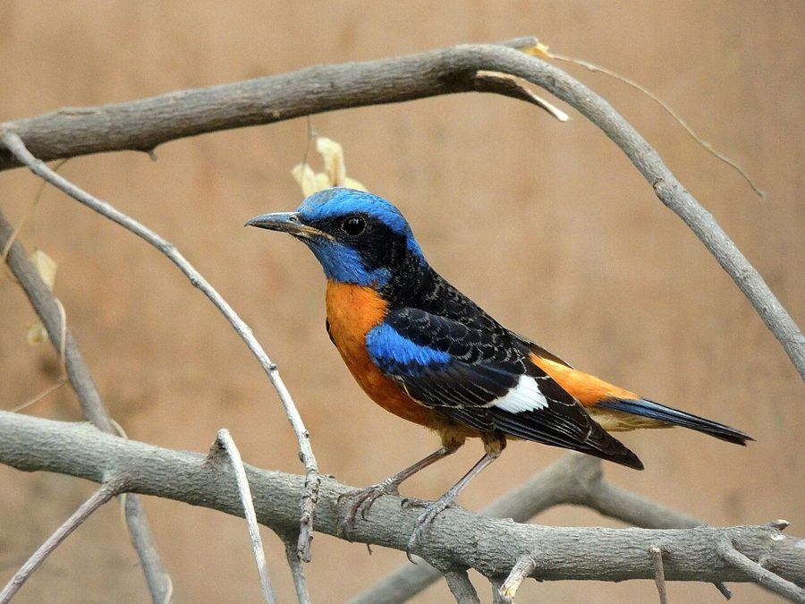

ब्लू-कैप्ड रॉक थ्रशBlue-capped Rock Thrush
Monticola cinclorhynchus · Muscicapidae · BRD-0328

- Scientific name वैज्ञानिक नाम
- Monticola cinclorhynchus (Vigors, 1832)
- Family कुल
- Muscicapidae
- Hindi हिंदी
- ब्लू-कैप्ड रॉक थ्रश
- Local names स्थानीय नाम
- krishna-patti, blue-capped rock thrush, blue-headed rock thrush
- Status here यहाँ की स्थिति
- native
- Movement आवागमन
- Winter visitor
- Known from कहाँ दर्ज
- Others have published records from the Basti–Ayodhya districts बस्ती–अयोध्या के ज़िलों से दूसरों के प्रकाशित अभिलेख
- IUCN IUCN
- LC
- Review समीक्षा
- not yet reviewed
When to look कब देखें
Winter visitor शीतकालीन प्रवासी. Expected mainly in October, November, December, January, February, March. मुख्यतः अक्टूबर, नवंबर, दिसंबर, जनवरी, फ़रवरी, मार्च में अपेक्षित।
Winter visitor from the Himalayas; arrives in autumn and departs northward by March. All migrants and visitors →
Tell it apart from इनसे अलग पहचानें
ब्लू-कैप्ड रॉक थ्रश / Blue-capped Rock Thrush
Monticola cinclorhynchus (Vigors, 1832) — Muscicapidae
ब्लू-कैप्ड रॉक थ्रश — हिमालय की पहाड़ियों से सर्दियों में प्रवास करके उत्तर भारत के मैदानी जंगलों में आने वाला एक अत्यंत सुंदर और बहुरंगी पक्षी है। नर पक्षी का सिर और गला चमकीले फिरोजी-नीले रंग का होता है, आंखों के पास काली पट्टी होती है, और सीना, पेट तथा कमर गहरे नारंगी-कत्थई रंग की होती है। इसके पंखों पर काला रंग और एक प्रमुख सफेद धब्बा चमकता है। यह पेड़ों की निचली डालियों पर बैठकर जमीन पर नजर रखता है और अचानक नीचे झपटकर कीड़े पकड़ता है।
Quick Identification त्वरित पहचान
| Feature | Description |
|---|---|
| Habit | Slender, upright-perching thrush-like muscicapid of open forests and rocky slopes |
| Crown and Throat | Brilliant, glistening cobalt-blue or azure cap, throat, and lesser wing-coverts in male |
| Mask | Bold black patch covering lores, cheeks, ear-coverts, and mantle |
| Wing Patch | Prominent, broad white patch on the base of the secondary flight feathers |
| Underparts | Rich, fiery chestnut-orange covering breast, abdomen, flanks, and rump |
| Female | Cryptic olive-brown upperparts and pale buff underparts heavily scaled with dark crescents |
| Posture | Erect, motionless perching on a low horizontal bough before making a pouncing drop |
Field tip: Scan low shaded branches in mango groves or sal woodland edges during winter. The brilliant blue head, black mask, bold white wing patch, and bright orange-chestnut underparts of the male make it unmistakable.
हिंदी:
नर का सिर चमकदार नीला, आंख के पास काला मुखौटा और सीना चमकीला नारंगी होता है।
पंखों के बीच में एक स्पष्ट सफेद धब्बा दिखाई देता है।
मादा भूरे रंग की होती है और उसके सीने पर आड़ी-तिरछी धारियां होती हैं।
Morphology आकारिकी
Measurements as given by Baker (1924):
| Measurement | Range |
|---|---|
| Wing | wing 100 to 104 mm. (Baker 1924 as Monticola cinclorhynchus) |
The Blue-capped Rock Thrush is a striking, medium-sized thrush displaying extreme sexual dimorphism. In adult males, the crown, nape, chin, upper throat, and lesser wing-coverts are brilliant, glistening cobalt-blue.
A broad black triangular band extends from the lores through the eye and ear-coverts onto the upper back and scapulars. The secondaries display a bold rectangular white basal patch on the outer webs, creating an eye-catching white wing speculum in flight and when perched. The entire lower plumage, along with the rump and upper tail-coverts, is vivid, glowing chestnut-orange.
The female is entirely different, lacking all blue and orange tones: she is olive-brown above, faintly cross-rayed with ochraceous on the rump, and pale whitish-buff below, densely scaled with dark olive-brown crescentic bars. The bill is dark horny-brown, with a yellow gape. The legs are plumbeous-brown.
Vocalisations. On its breeding grounds, the male delivers a clear, flute-like, melancholy whistling song. In winter quarters, it is mostly silent except for a soft, clicking chak-chak alarm note.
हिंदी:
इसके पंखों का फैलाव 100 से 104 मिमी तक होता है।
नर और मादा के रंग-रूप में बहुत अंतर होता है; नर बेहद रंगीन और मादा छलावरण वाली भूरी होती है।
यह खतरे के समय 'चक-चक' जैसी हल्की आवाज निकालता है।
Behaviour & Ecology व्यवहार और पारिस्थितिकी
Monticola cinclorhynchus is a solitary woodland species that spends its non-breeding winter period in shaded deciduous groves, sal forest edges, and wooded river corridors. It perches upright on a shaded horizontal branch, remaining motionless for several minutes while searching the ground for moving prey.
Upon spotting a beetle or caterpillar, it drops swiftly to the earth, seizes the quarry in its bill, and either swallows it immediately or carries it back to a favored perch to batter it against the wood. It also hops deliberately on the ground among fallen leaves and makes short aerial flycatching sallies after passing insects.
हिंदी:
यह पक्षी अकेले रहना पसंद करता है और डाल पर बिल्कुल सीधा और शांत बैठा रहता है।
जमीन पर कोई कीड़ा देखते ही यह झपट्टा मारकर उसे पकड़ लेता है और वापस डाल पर आ जाता है।
Life Cycle / Phenology जीवन चक्र
In the Himalayas between 4,000 and 9,000 feet, breeding commences in early April and continues through May to mid-June (Baker 1924, p. 172). In winter it spreads across the plains.
The nest is an open cup of moss, twigs, and roots placed in a rock cleft, bank hollow, or tree hole. A small clutch of eggs is laid and incubated for a few weeks. Both parents care for the young until fledging.
हिंदी:
हिमालय में यह अप्रैल की शुरुआत से मई और मध्य जून तक प्रजनन करता है (बेकर 1924)।
सर्दियों में यह मैदानी इलाकों में चला आता है।
यह चट्टानों की दरारों या पेड़ के खोखलों में काई और टहनियों से घोंसला बनाता है।
Host Plants or Prey आहार
The Blue-capped Rock Thrush is primarily insectivorous, supplementing its diet with wild berries:
- Ground and leaf beetles, weevils, and grasshoppers
- Lepidopteran caterpillars gleaned from foliage
- Earthworms, centipedes, and small land invertebrates
- Small wild fruits and berries
हिंदी:
इसका मुख्य आहार जमीन के कीड़े, टिड्डे, इल्लियां, केंचुए और छोटे जंगली फल हैं।
Predators / Natural Enemies शत्रु व परभक्षी
Hawks, owls, and small carnivores take birds of this size. No source opened for this atlas names a specific predator of this bird.
हिंदी:
बाज़, उल्लू और छोटे मांसाहारी इस आकार के पक्षियों का शिकार करते हैं। इस एटलस के लिए खोले गए किसी स्रोत में इस पक्षी के किसी विशिष्ट शिकारी का नाम नहीं है।
Agricultural / Human Relevance कृषि व मानव संदर्भ
The Blue-capped Rock Thrush feeds on insects, worms, snails, and small fruits (Baker 1924, p. 171). It is protected under the Wildlife (Protection) Act, 1972.
हिंदी:
ब्लू-कैप्ड रॉक थ्रश कीड़े-मकोड़ों, केंचुओं और छोटे जंगली फलों को खाता है (बेकर 1924)। यह वन्यजीव (संरक्षण) अधिनियम, 1972 के तहत संरक्षित है।
Expected Locally स्थानीय रूप से अपेक्षित
Not a field record. Written from published accounts for eastern Uttar Pradesh. No confirmed local sighting yet — if you have seen it, that is what the atlas needs.
अभी तक स्थानीय पुष्टि नहीं। यह विवरण प्रकाशित स्रोतों से है, किसी अवलोकन से नहीं।
Search along shaded lower boughs of old mango orchards, rocky stream banks, and sal forest edges during winter.
GBIF holds published records from these districts.
A first record would be a photograph of an adult male or female with place and date, sent through the About page.
Distribution वितरण
Global and historical range: Breeds in the Himalayas from eastern Afghanistan and Pakistan eastward through northern India, Nepal, and Bhutan. Winters across peninsular and southwestern India (especially the Western Ghats) and parts of Bangladesh and Myanmar.
Regional status: Regular winter visitor and passage migrant across the plains and foothill forests of eastern Uttar Pradesh between October and March.
हिंदी:
यह हिमालय में प्रजनन करता है और सर्दियों में पूरे मध्य और प्रायद्वीपीय भारत में फैल जाता है।
अवध और पूर्वांचल के पुराने बागों में यह सर्दियों के महीनों में देखा जा सकता है।
Research Questions शोध प्रश्न
- What are the key stopover sites and passage migration schedules of Monticola cinclorhynchus across the central Gangetic plain? / मध्य गंगा के मैदानों में इस पक्षी के प्रवास के मुख्य पड़ाव और समय सारिणी क्या हैं?
- How does foraging ground substrate (leaf litter vs bare soil) affect pounce success in wintering orchards? / बगीचों में सूखी पत्तियों या खुली जमीन पर शिकार करने की सफलता में क्या अंतर होता है?
- What is the degree of winter territory fidelity exhibited by returning individuals across successive seasons?
- How do ambient winter temperatures in northern India trigger the timing of northward spring departure?
- What are the energetic costs of plumage sexual dimorphism during trans-subcontinental migration?
Similar Species मिलती-जुलती प्रजातियाँ
| Species | How to tell apart | हिंदी | |
|---|---|---|---|
| [[white_rumped_shama\ | White-rumped Shama]] (Copsychus malabaricus) | Longer tail with white outer feathers, white rump, black upperparts, lacking blue crown | शामा |
| [[greater_racket_tailed_drongo\ | Greater Racket-tailed Drongo]] (Dicrurus paradiseus) | Completely glossy black with crested forehead and racket tail streamers; canopy dweller | भीमराज |
Field rule: The dazzling combination of bright cobalt-blue cap, black mask, broad white wing patch, and blazing chestnut-orange underparts identifies the male Blue-capped Rock Thrush instantly.
हिंदी:
नीला सिर, आंखों पर काला मुखौटा, पंखों पर सफेद धब्बा और चमकीला नारंगी पेट इसकी अचूक पहचान हैं।
Taxonomy & Classification वर्गीकरण
Original description. Described by Nicholas Aylward Vigors in 1832 in Proceedings of the Committee of Science and Correspondence of the Zoological Society of London (pt. 1, p. 172), under the basionym "Petrocincla cinclorhyncha".
Synonyms and historical names. Stuart Baker (1924, p. 171) treated the species under Monticola cinclorhynchus (also recorded as Monticola cinclorhyncha), citing the vernacular name "Krishna-patti" in Nepal.
Subspecies. Monotypic; no subspecies are recognized across its Himalayan breeding and Indian wintering range.
Family and order placement. Order Passeriformes; family Muscicapidae (Old World flycatchers and chats); genus Monticola.
IUCN status rationale. Evaluated as Least Concern (LC) on the IUCN Red List because of its vast range, lack of evidence for major declines, and healthy populations across Himalayan forests.
हिंदी:
विगर्स ने 1832 में इसका वर्णन किया था। यह मस्किकैपिडे (फ्लाईकैचर) कुल का सदस्य है और संकटमुक्त (LC) है।
Photo Gallery फोटो गैलरी
No photos yet — add field photos to media/species/blue_capped_rock_thrush/ and run node scripts/sync_photos.js.
Photos needed आवश्यक फोटो
- [ ] Adult male perched on shaded branch showing blue crown and white wing patch (डाल पर बैठा रंगीन नर पक्षी)
- [ ] Female perched upright showing scaled underparts (सीने पर धारियां दिखाती मादा)
References संदर्भ
- Vigors, N. A. (1832). Proceedings of the Committee of Science and Correspondence of the Zoological Society of London, pt. 1, p. 172 (as "Petrocincla cinclorhyncha").
- Baker, E. C. S. (1924). The Fauna of British India, Including Ceylon and Burma. Birds. Vol. 2. Taylor & Francis, London, p. 171 (as Monticola cinclorhynchus).
- Ali, S. & Ripley, S. D. (1987). Compact Handbook of the Birds of India and Pakistan. Oxford University Press, New Delhi.
- BirdLife International (2016). Monticola cinclorhynchus. The IUCN Red List of Threatened Species 2016: e.T22708279A94155181.
- Wildlife (Protection) Act, 1972 (as amended in 2022). Government of India, Schedule II.
- GBIF Occurrence Data — Monticola cinclorhynchus (Vigors, 1832), India (2025).
Source file: species/fauna/birds/blue_capped_rock_thrush.md